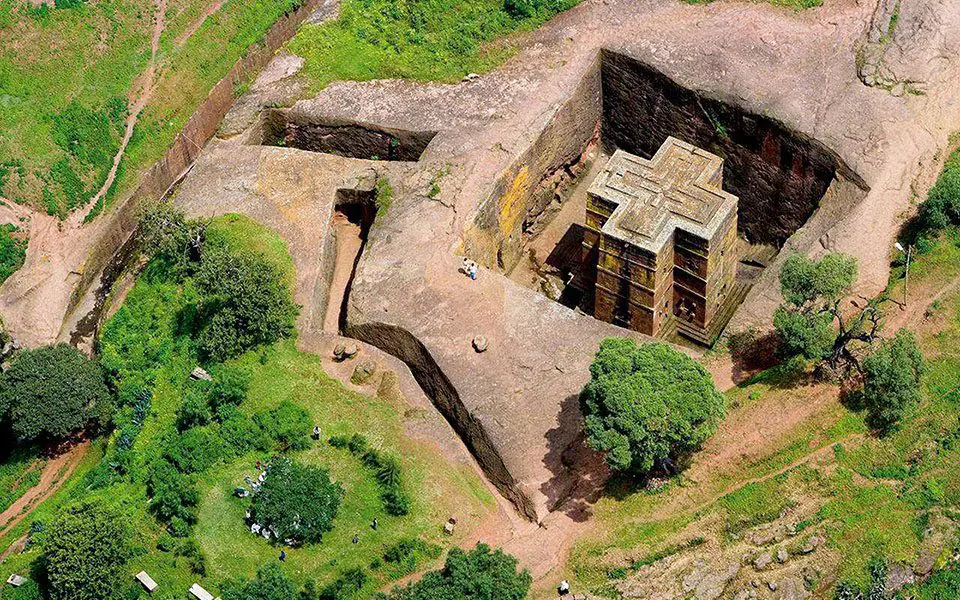
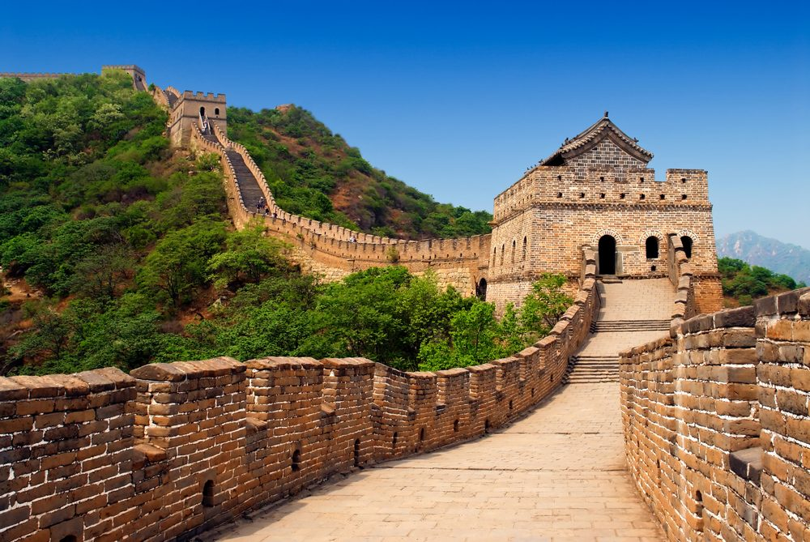

- Statue Of Liberty, USA
- Lalibela, Ethiopia
- huge Bete Medhane Alem
- cross-shaped Bete Giyorgis
- Taj Mahal, India
- The Greate wall, China
The Statue of Liberty is a colossal neoclassical sculpture on Liberty Island in New York Harbor in New York City, in the United States. The copper statue, a gift from the people of France, was designed by French sculptor Frédéric Auguste Bartholdi and its metal framework was built by Gustave Eiffel.
"The Statue of Liberty Enlightening the World" was a gift of friendship from the people of France to the United States and is recognized as a universal symbol of freedom and democracy. The Statue of Liberty was dedicated on October 28, 1886. It was designated as a National Monument in 1924. Employees of the National Park Service have been caring for the colossal copper statue since 1933.
The Statue of Liberty is still a shining star of the United States providing hope and freedom. It is part of the National Register of Historic Places and was gifted to the United States in 1884 to welcome immigrants and visiting this symbol of freedom is one of the top things to do in New York City.
Lalibela is a town in the Amhara region of northern Ethiopia. It's known for its distinctive rock-cut churches dating from the 12th and 13th centuries, which are pilgrimage sites for Coptic Christians.Carved out of rock, the subterranean monoliths includes:
The 11 medieval monolithic cave churches of this 13th-century 'New Jerusalem' are situated in a mountainous region in the heart of Ethiopia near a traditional village with circular-shaped dwellings. Lalibela is a high place of Ethiopian Christianity, still today a place of pilmigrage and devotion.
The Taj Mahal in Agra, India is the most iconic monument in India. Built in the 17th century by Mughal Emperor Shah Jahan, the Taj Mahal is considered the ultimate love letter. He had it commissioned to honor his wife.
It took more than 20 years to build the Taj Mahal and he lived in sadness until his death. It fell to ruin over the years, but luckily, the British viceroy of India – Lord Curzon, put an end to looting and restored it to its former glory. It is now a UNESCO World Heritage Site as of 1983 and the Taj Mahal was named one of the new 7 Wonders of the World.

The Great Wall was continuously built from the 3rd century BC to the 17th century AD on the northern border of the country as the great military defence project of successive Chinese Empires, with a total length of more than 20,000 kilometers.
The Great Wall begins in the east at Shanhaiguan in Hebei province and ends at Jiayuguan in Gansu province to the west. Its main body consists of walls, horse tracks, watch towers, and shelters on the wall, and includes fortresses and passes along the Wall.
The Great Wall reflects collision and exchanges between agricultural civilizations and nomadic civilizations in ancient China. It provides significant physical evidence of the far-sighted political strategic thinking and mighty military and national defence forces of central empires in ancient China, and is an outstanding example of the superb military architecture, technology and art of ancient China. It embodies unparalleled significance as the national symbol for safeguarding the security of the country and its people.
